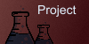

|  |

|
|---|

Aidan Fox
ePortfolio
- #: S3956717
- w: www.github.com/
- e: S3956717@student.rmit.edu.au
- m: +61 487 958 695
Myers Briggs

Learning Style

Disc Personality

Conclusions
What do the results of these tests mean for you?
they tell me that I am a person who likes things to be balanced and operate smoothly to the point where I will take action to see that they go smoothly and without preventable failings.
How do you think these results may influence your behaviour in a team?
In a team, I would be the person to reinforce co-operation and focus. This could be expressed as ‘The Glue that holds the team together’ or as ‘The village elder’ who settles disputes and consults from wisdom
How should I take this into account when forming a team?
while forming a team I do not need to be as concerned about competitive hotheads because I can manage them better than other types of people, however I do need to be certain that my team is not entirely composed of similar types to me due to the lack of neurodiversity that would entail